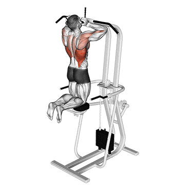

.png)
Latzug
Muskeln: Latissimus
Hiflsmuskeln: Bizeps, Hintere Schulter, Rückenmitte
Ausführung:
1. Die Sitzfläche des Gerätes so einstellen, dass die OBerschenkel an der Beinhalterung fixiert sind und eine gerade Sitzhaltung eingenommen wird.
2. Die Latzug-Stange in doppelter Schulterbreite so umfassen, dass die Handflächen nach vonre zeigen und leicht nach hinten lehnen.
3. Die Stange nach unten in Richtung Brust ziehen, sodass sich das Kinn oberhalb der Stange befindet.
4. Kontrolliert dem Gewicht nachgeben um in die Ausgangsposition zu gelangen, wobei die Ellenbogen leicht gebeugt bleiben.
Klimmzug (Maschine)
Muskeln: Latissimus
Hiflsmuskeln: Bizeps, Hintere Schulter
Ausführung:
1. Griffe der Klimmzugstange in doppelter Schulterbreite umfassen, sodass die Handflächen dabei nach vorne zeigen. Knie auf dem Beipolster platzieren.
2. Den Körper nach oben ziehen, sodass die Brust sich der Stange nähert und sich der Kopf oberhalb der Stange befindet.
3. Den Körper absinken lassen um in die Ausgangsposition zu gelangen, wobei die Ellenbogen leicht gebeugt bleiben.
